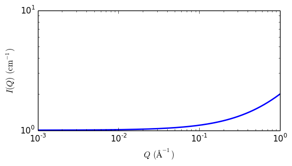

line
Line model
| Parameter | Description | Units | Default value |
|---|---|---|---|
| scale | Source intensity | None | 1 |
| background | Source background | cm-1 | 0.001 |
| intercept | intercept in linear model | cm-1 | 1 |
| slope | slope in linear model | Å·cm-1 | 1 |
The returned value is scaled to units of cm-1 sr-1, absolute scale.
This model calculates intensity using simple linear function
Definition
The scattering intensity \(I(q)\) is calculated as
\[I(q) = \text{scale} (A + B \cdot q) + \text{background}\]
Note
For 2D plots intensity has different definition than other shape independent models
\[I(q) = \text{scale} (I(qx) \cdot I(qy)) + \text{background}\]

Fig. 92 1D plot corresponding to the default parameters of the model.
References
None.